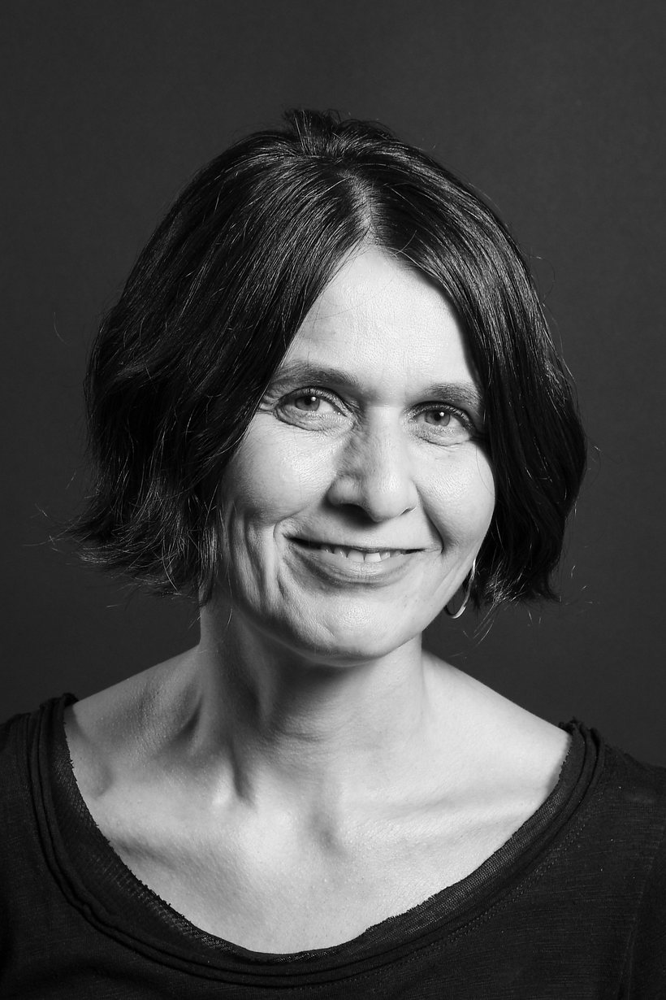

Psychiatrisch-psychotherapeutische Praxis · Bern
Fachärztin für Psychiatrie und Psychotherapie
Willkommen in meiner Praxis. Sie befindet sich im Zentrum für Systemische Therapie und Beratung Bern (ZSB) – einem Kompetenzzentrum, das ein qualifiziertes Praxisnetzwerk und vielseitige Bildungsangebote unter einem Dach vereint.
Ambulante integrierte psychiatrische Behandlung bei fast allen psychischen Erkrankungen – insbesondere Depressionen, Psychosen, bipolaren Störungen, Erschöpfungssyndromen, Traumafolgestörungen und Angststörungen. Ebenso Kriseninterventionen bei Trennung, Jobverlust, Erkrankung oder dem Tod eines Angehörigen. Migrationsspezifische Themen sind mir vertraut.
Ich biete methodenkombinierte, ressourcen- und lösungsorientierte Psychotherapie mit systemischem Schwerpunkt an – als Einzel-, Paar- und Familientherapie.
Die Kosten psychiatrisch-psychotherapeutischer Behandlungen bei einer Erkrankung werden von den Krankenkassen im Rahmen der Grundversicherung übernommen (abzüglich Selbstbehalt und Franchise). Die Leistungen werden individuell abgerechnet.
Ich biete Fall-Supervisionen für Einzelne, Gruppen und Teams an – zum Beispiel, wenn Sie sich fragen, ob eine psychiatrische Diagnose das Verhalten Ihrer ratsuchenden Personen erklärt, wenn Sie nach neuen Impulsen im Umgang mit diesen Menschen suchen, wenn Sie im interkulturellen Kontext nicht weiterkommen oder wenn Sie übersetzen und dabei Supervision brauchen.
Die eigentliche Teamentwicklung ist nicht Teil meines Angebotes. Zusätzlich biete ich Selbsterfahrung für Menschen in helfenden Berufen an. Diese Leistungen sind privat zu bezahlen.
Sprachen: Das Angebot ist auf Deutsch, Englisch und Slowakisch möglich.
Psychiatrie ist ein ärztliches Fachgebiet, das sich mit der Vorbeugung, Erkennung und Behandlung psychischer Erkrankungen befasst. Entstehung und Verlauf beurteile ich nach einem ganzheitlichen Modell, das drei Ebenen berücksichtigt:
Psychische Ressourcen und Biographie. Sie lassen sich mit Psychotherapie stärken.
Veränderungen von Botenstoffen und Rezeptoren im Gehirn. Sie lassen sich mit Medikamenten beeinflussen – ich bin auch offen für pflanzliche Mittel.
Arbeit, Familie, Kultur. Dieser Hintergrund kann erkannt und unter Umständen verändert werden.
Psychotherapie heisst wörtlich „Behandlung der Seele“ – gemeint ist die Behandlung mit seelischen Mitteln, durch Gespräche und psychologische Interventionen. Ziel ist, Leidenszustände in Richtung Symptomreduktion und/oder Strukturveränderung zu beeinflussen. Dabei werden lernbare Techniken für die Lebensführung vermittelt sowie Probleme und Konflikte in der Biografie oder im aktuellen sozialen Netz bearbeitet. Dieser Prozess ist geplant und wird gemeinsam begleitet.

Seit 2009 führe ich in Bern meine eigene psychiatrisch-psychotherapeutische Praxis – mit systemischem Schwerpunkt und laufender, breiter fachlicher Weiterbildung.
Sprechstunde nur nach telefonischer Anmeldung.
In der Regel Montag bis Donnerstag, 8.00–17.00 Uhr.
Einen Ersttermin vereinbaren Sie bitte telefonisch oder per E-Mail (nicht per SMS).
Zentrum für Systemische Therapie und Beratung Bern (ZSB)
Villettemattstrasse 15, 3007 Bern · 4. Stock
Die Praxis ist barrierefrei.